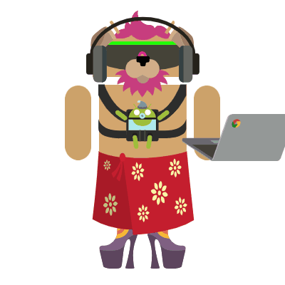
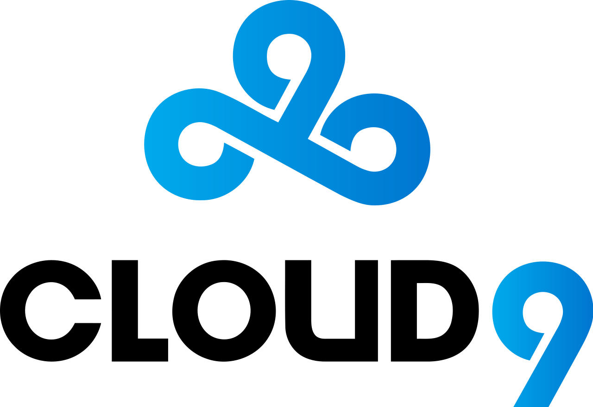

Victor Nguyen's website
My name is Victor Nguyen and a sophomore at La Quinta High school.
I love to watch anime on my free time and play video games with friends.
Cloud 9 is my favorite gaming team since I've played with one of the members
and has taught me a lot to the game of Counter-Strike and I've enjoyed it since.
I'm looking forward to a successful sophomore years (only A's), and studying
for the SAT this summer. My goal in life is to have a job that pays well
where money isn't the issue to our daily lives and to support my family.
On my free time, watch anime is my number one priority, I then would play
Counter-Strike and coach some plays to be a good overall player and finish
any homework given. My favorite thing about school is the new things that
are being taught by the teachers that really shock us and brings more interest
to learning and staying in school. Played Counter-Strike in the professional field
without getting paid but was offered once and turned it down for a better opportunity
that I might have in the future and might get paid more (Dignitas). After just coming
back from half a year of not playing on the professional field, lost some skills
but my knowledge still remains. Thanks for reading my long biography.

About Me
By: Victor Nguyen
Grade: Sophomore
| Schedule | |
|---|---|
| Period | Classes |
| Period 0 | Chemistry |
| Period 1 | Spanish 2 |
| Period 2 | Algebra 2 |
| Period 3 | AP Comp Sci Principles |
| Period 4 | World History |
| Period 5 | English |
| Period 6 | Soccer |
Hobbies
- Playing Counter-Strike!
- Playing soccer with friends
- Watching YouTube
- Watching Anime
- Sleeping
Favorite shows
- Fate Series (anime)
- God Eater(anime)
- tsukai no world break(anime)
- High school dxd (anime)
- WorldEnd (anime)
"There are worthless things, but there are no meaningless things"
- Kotomine Kirei
